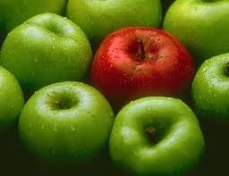

FRUTAS
.jpg)
Las frutas son, quizás, los alimentos más llamativos por su diversidad de colores y formas. Pero además de lo que muestran a simple vista, forman parte de los alimentos con mayor cantidad de nutrientes y sustancias naturales altamente beneficiosas para la salud. Si nos detenemos a pensar, veremos que las frutas y todos los vegetales, sobreviven a la intemperie, enfrentando todo tipo de condiciones y agresiones meteorológicas. Todo ello es posible gracias a las sustancias protectoras y antioxidantes naturales que poseen. En definitiva esas mismas sustancias son las que nos protegen cuando consumimos el alimento. Es decir que nos beneficiamos absolutamente con todas esas vitaminas y nutrientes que la fruta posee. Llenamos de vida todo nuestro organismo.
¿Qué beneficios nos aporta consumir frutas?
Una ración diaria de 3 a 4 frutas, aportan naturalmente los requerimientos diarios de vitamina C Aportan una variedad y cantidad de vitaminas y minerales; principalmente vitamina C Hidratan el organismo rapidamente. Ayudan al correcto funcionamiento del aparato digestivo. Facilita el drenaje de líquidos, al ser diuréticas y depuradoras del organismo. Aportan fibras vegetales solubles No aportan grasas (excepto los frutos secos, olivas, aguacates y cocos que aportan aceites beneficiosos para el organismo). Aportan vitaminas antioxidantes naturales.
Las frutas y hortalizas son importantes fuentes de vitaminas y otros compuestos bioactivos en la dieta y un consumo de 5 o más porciones de frutas y verduras al día esta ampliamente recomendado dado que se asocia con un menor riesgo de enfermedades crónicas.
La Organización Mundial de la Salud (OMS) recomienda que todas las personas deban de tratar de comer por lo menos 5 porciones de verduras y/o frutas diferentes diariamente.
Lo que para muchos parece ser demasiado o casi imposible, pero no lo es si pensamos en las diversas formas que tenemos para ingerir estos alimentos, como por ejemplo, los jugos, las ensaladas, o comerlos como snack.
Además de entregar a nuestro organismo excelentes nutrientes, ingerirlas nos ayuda a disminuir el riesgo de enfermedades, entre otras cosas.
¿Qué beneficios nos aporta consumir Manzanas?

Favorecen los procesos digestivos, y las frutas en general contribuyen a una alimentación equilibrada y a la desintoxicación del organismo.
Particularmente la manzana, tiene una alto valor nutricional, conteniendo más de treinta minerales, así como también su pulpa contiene ácido de fruta y distintos azúcares.
Sobre todo lo que es la piel de la manzana, constituye una gran fuente de vitaminas, y también es fuente de vitamina C, que contiene en distinta cantidad según el tipo de manzana.